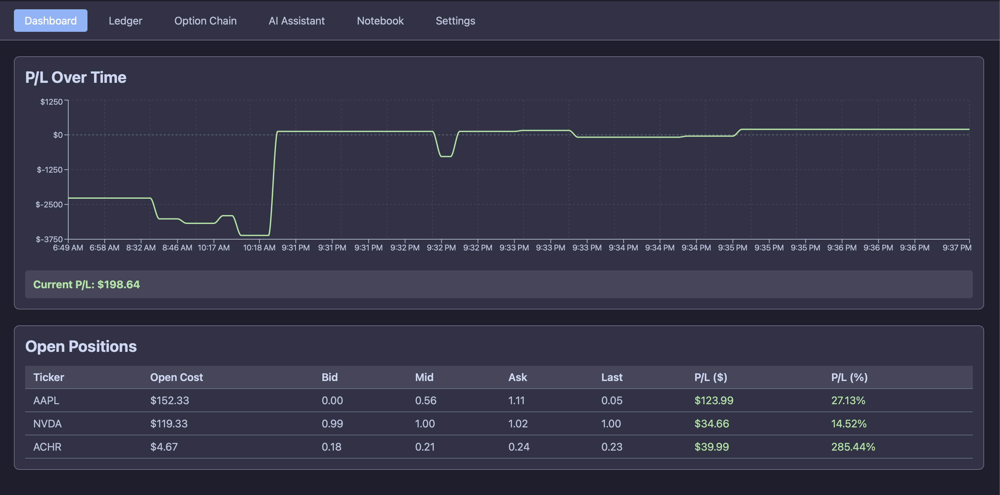
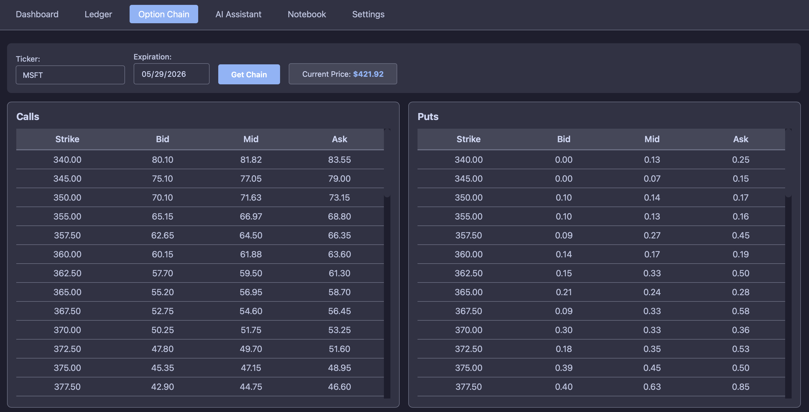

Trading Tools | Full-Stack Application
Options Hub
This project is a web-based options dashboard built to manage positions, monitor P/L, and inspect option chains in one workflow. The frontend is implemented with React, while a FastAPI backend handles market data requests, persistence, and AI-assistant endpoints.
Position records are stored in SQLite, pricing data is pulled from Tradier, and a Gemini-powered assistant can discuss strategy and position context. The app is organized around practical trader workflows: dashboard review, ledger management, chain lookup, settings, and AI chat.

Application Scope
- Track open and closed options positions in a ledger
- Calculate and monitor running P/L over time
- Fetch quotes, option chains, and contract pricing
- Filter chain strikes around spot with configurable range
- Import structured position data from Excel
- Use Gemini for position-specific discussion and notes
Core Sections
- Dashboard: Open-position pricing snapshot and total P/L charting
- Ledger: Add, edit, close, delete, and roll positions with row-level actions
- Option Chain: Calls and puts lookup by ticker and expiration
- AI Assistant: Backend-routed Gemini chat with position context support
- Settings: Profile preferences and strike-range controls
- Notebook: Reserved placeholder page for future expansion

Architecture Notes
The backend exposes REST endpoints for positions, market data, settings, and AI chat while the frontend consumes those endpoints through a shared API layer. During development, Vite proxies `/api` calls to the FastAPI server for a clean local workflow.
SQLite is used for durable position records and close-trade metrics such as collateral, P/L, days, ROC, and annualized ROC. Historical P/L chart points are retained in browser local storage through the frontend context.
Operational & Security Notes
- Backend requires a Tradier token for quotes and chain data.
- Gemini key is optional unless AI chat endpoints are used.
- Tokens and API keys should never be committed to source control.
- CORS is configured for local development origins.
- This project is educational tooling and not financial advice.